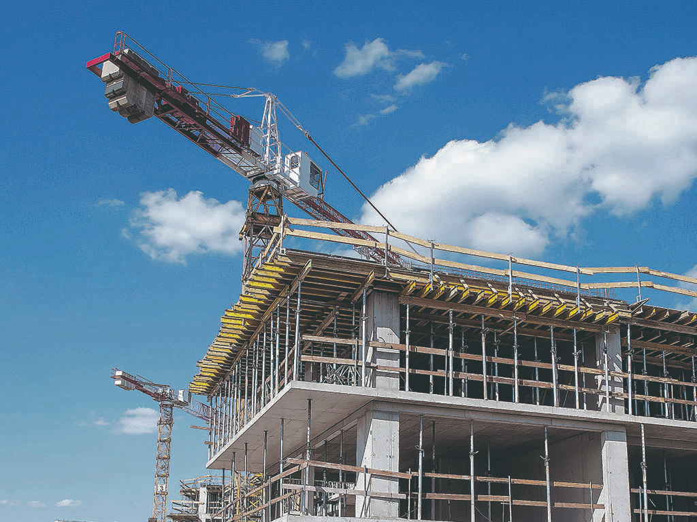
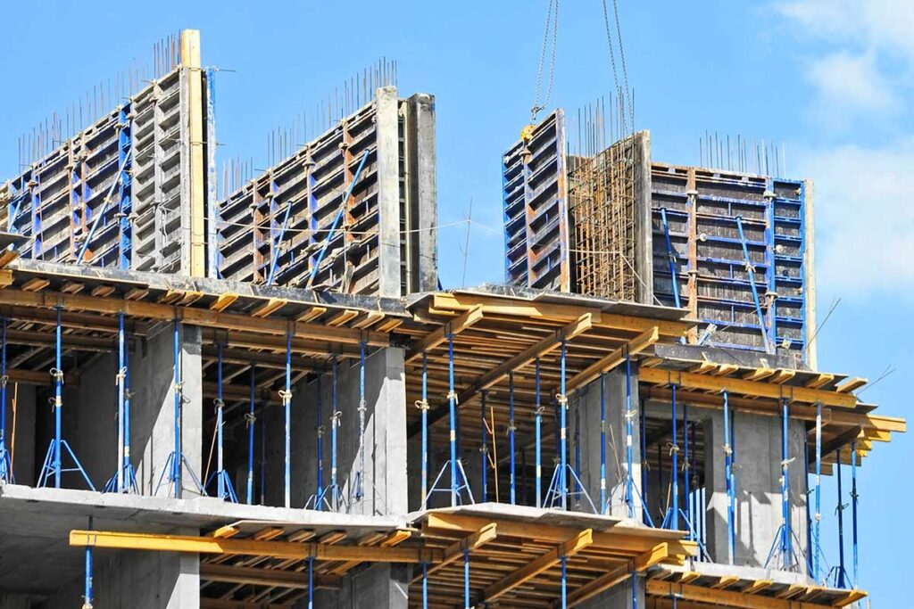
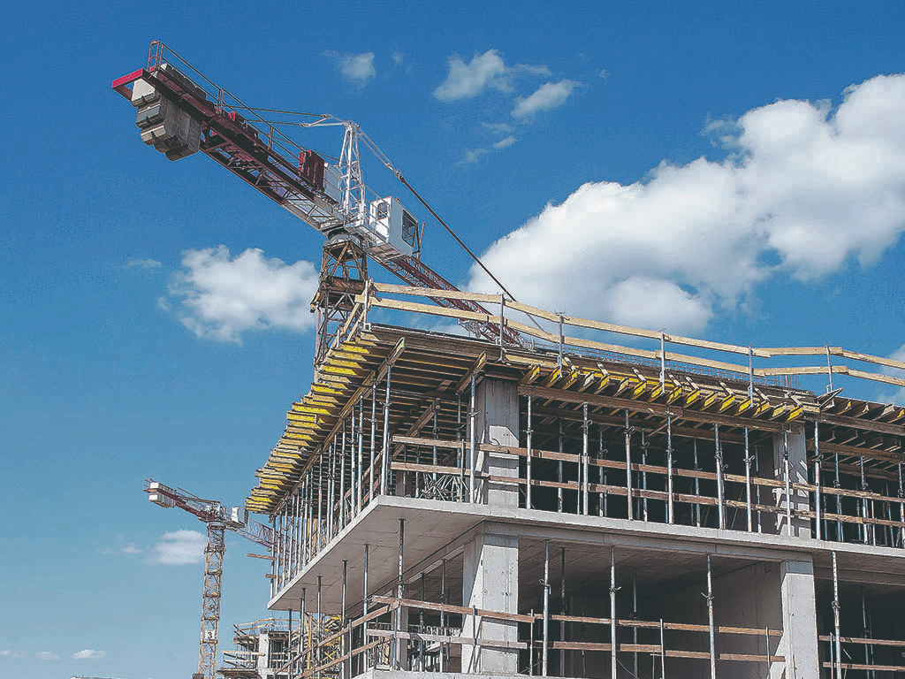
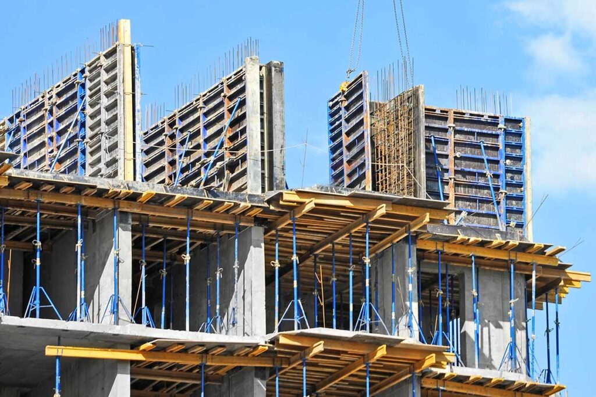

.jpeg) 



¿Quienes somos?
Somos una cooperativa de viviendas de ayuda mutua que nace con el propósito de construir hogares dignos y fortalecer lazos comunitarios a través del trabajo solidario y la participación democrática de nuestros socios. Nos presentamos como una organización autogestionada, donde cada integrante aporta esfuerzo, compromiso y cooperación para alcanzar el sueño común de una vivienda propia. Nuestro objetivo es crecer juntos, promoviendo valores de equidad, transparencia y responsabilidad colectiva.
Nuestra Mision
Nuestra misión es brindar a cada familia la oportunidad de acceder a una vivienda digna a través del esfuerzo colectivo y la ayuda mutua. Creemos en la cooperación como motor para transformar la realidad de nuestros socios y construir un futuro más justo y solidario.
Participación de Nuestros socios
En nuestra cooperativa, cada socio tiene voz y voto. La participación democrática es uno de nuestros pilares fundamentales, asegurando que todas las decisiones se tomen de forma equitativa, transparente y en beneficio de la comunidad.
Aporte de trabajo y solaridad
El aporte semanal de horas de trabajo de nuestros socios no solo construye las viviendas, sino también la unión y la solidaridad que caracterizan a nuestra comunidad. Cada esfuerzo individual se convierte en un logro compartido
Nuestra Autogestión
Somos una organización autogestionada: los mismos socios planificamos, construimos y administramos nuestros proyectos. Esta forma de trabajo nos permite fortalecer la confianza, la responsabilidad colectiva y el sentido de pertenencia.
Gestión y Transparencia Económica
La transparencia es un valor esencial para nosotros. Por eso implementamos sistemas que permiten un seguimiento claro de las cuotas, aportes y avances de obra, garantizando confianza y equidad en la gestión de los recursos.
Impacto Social
Más que viviendas, buscamos construir comunidad. Nuestro impacto trasciende lo material: promovemos la integración social, la cooperación entre familias y el desarrollo sostenible, contribuyendo a un mejor entorno para todos.